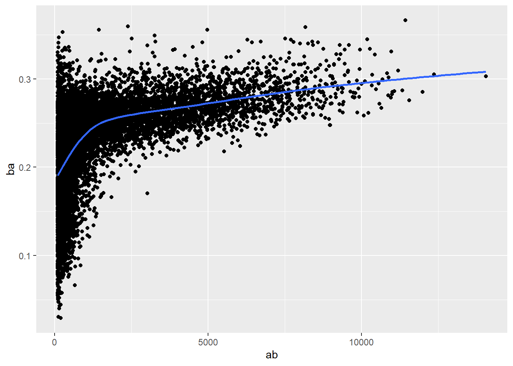

Transformando dados com dplyr
27/04/2020
Introdução
O dplyr é um pacote de manipulação de dados. Foi criado para encarar alguns problemas existentes na forma como o R base trabalha com as operações básicas de seleção das variáveis e casos, e também com uma preocupação com a “ergonomia”.
A ideia é utilizar nomes de funções e argumentos que são fáceis de lembrar e também fáceis de concatenar em cadeias de operações semelhantes a uma “linha de montagem”.
Pré Requisitos
Vamos precisar de um banco de dados de treino chamado nycflights13, que contém registros administrativos da operação dos aeroportos da cidade de Nova Iorque em 2013. Caso você ainda não tenha, aproveite e faça a instalação do dplyr.
Agora carregue os dois pacotes e vamos dar uma olhada no formato do banco de dados flights.
Note que o dplyr informa uma mensagem de aviso ao ser carregado, de que as funções filter(), lag(), etc, estão “mascaradas” pelo pacote. Isto significa que se você quiser usar estas funções a partir desse momento, você vai ter que passar o “nome completo” delas, stats::filter(), stats::lag(), etc.
## # A tibble: 336,776 x 19
## year month day dep_time sched_dep_time dep_delay arr_time sched_arr_time arr_delay carrier
## <int> <int> <int> <int> <int> <dbl> <int> <int> <dbl> <chr>
## 1 2013 1 1 517 515 2 830 819 11 UA
## 2 2013 1 1 533 529 4 850 830 20 UA
## 3 2013 1 1 542 540 2 923 850 33 AA
## 4 2013 1 1 544 545 -1 1004 1022 -18 B6
## 5 2013 1 1 554 600 -6 812 837 -25 DL
## 6 2013 1 1 554 558 -4 740 728 12 UA
## 7 2013 1 1 555 600 -5 913 854 19 B6
## 8 2013 1 1 557 600 -3 709 723 -14 EV
## 9 2013 1 1 557 600 -3 838 846 -8 B6
## 10 2013 1 1 558 600 -2 753 745 8 AA
## # ... with 336,766 more rows, and 9 more variables: flight <int>, tailnum <chr>, origin <chr>,
## # dest <chr>, air_time <dbl>, distance <dbl>, hour <dbl>, minute <dbl>, time_hour <dttm>Vejam que a impressão do banco de dados é um pouco diferente do data.frame original do R. Aqui, a tabela por padrão imprime apenas as primeiras 10 observações e já informa qual o tipo de coluna.
- `int` para números interiores
- `dbl` para números reais
- `chr` para caracteres (strings)
- `dttm` para data e hora
- `lgl` para lógico booleano (TRUE/FALSE)
- `fctr` para variáveis categóricas
- `date` para datas (sem hora)dplyr em perspectiva
O que o pacote dplyr tem a nos oferecer, então? Suas funções pré programadas para as operações mais comuns no trabalho cotidiano com um banco de dados.
- Escolher observações/casos de acordo com os valores de uma variável
(`filter()`)
- Reordenar o banco de acordo com alguma variável (`arrange()`)
- Selecionar variáveis de acordo com seus nomes (`select()`)
- Criar novas variáveis derivadas das existentes (`mutate()`)
- Criar medidas resumo (`summarise()`)Todas estas operações podem ser realizadas em conjunto com a função group_by, que muda a forma de cálculo: se o comportamento padrão é aplicar a mesma operação para todo o data.frame, ao usar group_by a operação será realizada uma vez para grupo de observações dado pelo valor de alguma variável categórica. Isto também é chamado de “mudança de escopo”.
Outra característica útil do dplyr, é sua consistência interna: todos os “verbos” funcionam da mesma forma:
1. O Primeiro argumento é um data.frame
2. Os argumentos seguintes descrevem o que deve ser feito com este
data.frame
3. O resultado é sempre um data.frame modificadoIsto permite que você crie cadeias complexas de operações utilizando poucos passos.
“Filtros” de observações com filter()
filter() realiza corte “horizontais” no banco de dados, selecionando os casos de acordo com testes lógicos nas variáveis do banco. Digamos, por exemplo, que queiramos ver apenas os voos realizados no dia 01/01/2013.
## # A tibble: 842 x 19
## year month day dep_time sched_dep_time dep_delay arr_time sched_arr_time arr_delay carrier
## <int> <int> <int> <int> <int> <dbl> <int> <int> <dbl> <chr>
## 1 2013 1 1 517 515 2 830 819 11 UA
## 2 2013 1 1 533 529 4 850 830 20 UA
## 3 2013 1 1 542 540 2 923 850 33 AA
## 4 2013 1 1 544 545 -1 1004 1022 -18 B6
## 5 2013 1 1 554 600 -6 812 837 -25 DL
## 6 2013 1 1 554 558 -4 740 728 12 UA
## 7 2013 1 1 555 600 -5 913 854 19 B6
## 8 2013 1 1 557 600 -3 709 723 -14 EV
## 9 2013 1 1 557 600 -3 838 846 -8 B6
## 10 2013 1 1 558 600 -2 753 745 8 AA
## # ... with 832 more rows, and 9 more variables: flight <int>, tailnum <chr>, origin <chr>,
## # dest <chr>, air_time <dbl>, distance <dbl>, hour <dbl>, minute <dbl>, time_hour <dttm>Ao realizar o filtro, dplyr gera um novo data.frame que contém apenas as observações filtradas. O novo data.frame não modifica o anterior, se você quiser salvar o resultado, é necessário fazê-lo separadamente:
Uma dica para o caso de você querer tanto salvar um resultado numa variável quanto imprimí-lo no console, é colocar parenteses em torno de toda a operação. Veja este segundo exemplo para os voos no dia do Natal.
## # A tibble: 719 x 19
## year month day dep_time sched_dep_time dep_delay arr_time sched_arr_time arr_delay carrier
## <int> <int> <int> <int> <int> <dbl> <int> <int> <dbl> <chr>
## 1 2013 12 25 456 500 -4 649 651 -2 US
## 2 2013 12 25 524 515 9 805 814 -9 UA
## 3 2013 12 25 542 540 2 832 850 -18 AA
## 4 2013 12 25 546 550 -4 1022 1027 -5 B6
## 5 2013 12 25 556 600 -4 730 745 -15 AA
## 6 2013 12 25 557 600 -3 743 752 -9 DL
## 7 2013 12 25 557 600 -3 818 831 -13 DL
## 8 2013 12 25 559 600 -1 855 856 -1 B6
## 9 2013 12 25 559 600 -1 849 855 -6 B6
## 10 2013 12 25 600 600 0 850 846 4 B6
## # ... with 709 more rows, and 9 more variables: flight <int>, tailnum <chr>, origin <chr>,
## # dest <chr>, air_time <dbl>, distance <dbl>, hour <dbl>, minute <dbl>, time_hour <dttm>Para usar bem o filter() é importante saber selecionar suas observações com os operadores lógicos >, >=, <, <=, != (diferente), == (igual). Cuidado pra não confundir = (atribuição) com == (comparação). A mensagem de erro informa justamente isso.
Outro problema pode acontecer quando você usa números quebrados. Os valores abaixo tecnicamente seriam verdadeiros…
## [1] FALSE## [1] FALSEMas computadores usam aritmética com precisão finita, e portanto, reconhecem diferenças entre os dois valores. Nestes casos, use near().
## [1] TRUE## [1] TRUEO comportamento padrão de filter() quando você passa mais um teste é tratá-lo como TESTE1 “E” TESTE2, em que as duas tem que retornar verdadeiro para o caso ser selecionado. Se você quiser criar outros tipos de testes, terá que recorrer a operações lógicas mais complexas. Veja a figura acima.

Operações Lógicas
Veja por exemplo os voos que saem em novembro OU dezembro.
## # A tibble: 55,403 x 19
## year month day dep_time sched_dep_time dep_delay arr_time sched_arr_time arr_delay carrier
## <int> <int> <int> <int> <int> <dbl> <int> <int> <dbl> <chr>
## 1 2013 11 1 5 2359 6 352 345 7 B6
## 2 2013 11 1 35 2250 105 123 2356 87 B6
## 3 2013 11 1 455 500 -5 641 651 -10 US
## 4 2013 11 1 539 545 -6 856 827 29 UA
## 5 2013 11 1 542 545 -3 831 855 -24 AA
## 6 2013 11 1 549 600 -11 912 923 -11 UA
## 7 2013 11 1 550 600 -10 705 659 6 US
## 8 2013 11 1 554 600 -6 659 701 -2 US
## 9 2013 11 1 554 600 -6 826 827 -1 DL
## 10 2013 11 1 554 600 -6 749 751 -2 DL
## # ... with 55,393 more rows, and 9 more variables: flight <int>, tailnum <chr>, origin <chr>,
## # dest <chr>, air_time <dbl>, distance <dbl>, hour <dbl>, minute <dbl>, time_hour <dttm>Você não pode escrever filter(flights, month == (11 | 12)), pois o R vai interpretar isso incorretamente. Se você precisar utilizar múltiplos valores, prefira x %in% y.
Se você dominar bem este tipo de lógica booleana, você pode simplificar alguns tipos de operações. As duas operações abaixo são equivalentes.
## # A tibble: 316,050 x 19
## year month day dep_time sched_dep_time dep_delay arr_time sched_arr_time arr_delay carrier
## <int> <int> <int> <int> <int> <dbl> <int> <int> <dbl> <chr>
## 1 2013 1 1 517 515 2 830 819 11 UA
## 2 2013 1 1 533 529 4 850 830 20 UA
## 3 2013 1 1 542 540 2 923 850 33 AA
## 4 2013 1 1 544 545 -1 1004 1022 -18 B6
## 5 2013 1 1 554 600 -6 812 837 -25 DL
## 6 2013 1 1 554 558 -4 740 728 12 UA
## 7 2013 1 1 555 600 -5 913 854 19 B6
## 8 2013 1 1 557 600 -3 709 723 -14 EV
## 9 2013 1 1 557 600 -3 838 846 -8 B6
## 10 2013 1 1 558 600 -2 753 745 8 AA
## # ... with 316,040 more rows, and 9 more variables: flight <int>, tailnum <chr>, origin <chr>,
## # dest <chr>, air_time <dbl>, distance <dbl>, hour <dbl>, minute <dbl>, time_hour <dttm>## # A tibble: 316,050 x 19
## year month day dep_time sched_dep_time dep_delay arr_time sched_arr_time arr_delay carrier
## <int> <int> <int> <int> <int> <dbl> <int> <int> <dbl> <chr>
## 1 2013 1 1 517 515 2 830 819 11 UA
## 2 2013 1 1 533 529 4 850 830 20 UA
## 3 2013 1 1 542 540 2 923 850 33 AA
## 4 2013 1 1 544 545 -1 1004 1022 -18 B6
## 5 2013 1 1 554 600 -6 812 837 -25 DL
## 6 2013 1 1 554 558 -4 740 728 12 UA
## 7 2013 1 1 555 600 -5 913 854 19 B6
## 8 2013 1 1 557 600 -3 709 723 -14 EV
## 9 2013 1 1 557 600 -3 838 846 -8 B6
## 10 2013 1 1 558 600 -2 753 745 8 AA
## # ... with 316,040 more rows, and 9 more variables: flight <int>, tailnum <chr>, origin <chr>,
## # dest <chr>, air_time <dbl>, distance <dbl>, hour <dbl>, minute <dbl>, time_hour <dttm>Tome cuidado com valores missing, representados em R por NA. Eles complicam vários tipos de teste lógico.
## [1] NA## [1] NA## [1] NA## [1] NAResultado confuso:
## [1] NAFica mais fácil se você entender isso com um exemplo:
# X é a data de aniversário de Mário, que é desconhecida
x <- NA
# Y é o aniversário de João, que também é desconhecido
y <- NA
# João e Màrio tem a mesma idade?
x == y## [1] NASe você quiser testar se um valor é missing, use is.na()
## [1] TRUEfilter() seleciona apenas casos onde o valor do teste lógico é TRUE, excluindo tanto FALSE quanto NA.
## # A tibble: 1 x 1
## x
## <dbl>
## 1 3## # A tibble: 2 x 1
## x
## <dbl>
## 1 NA
## 2 3Ordene os dados com arrange()
Arrange funciona de forma parecida com filter(), só que ao invés de selecionar casos, ele ordena o banco de acordo com as variáveis selecionadas. Você pode informar várias variáveis, e ele vai ordenar o banco de acordo com a primeira, usando as variáveis subsequentes para ir “desempatando” os casos.
## # A tibble: 336,776 x 19
## year month day dep_time sched_dep_time dep_delay arr_time sched_arr_time arr_delay carrier
## <int> <int> <int> <int> <int> <dbl> <int> <int> <dbl> <chr>
## 1 2013 1 1 517 515 2 830 819 11 UA
## 2 2013 1 1 533 529 4 850 830 20 UA
## 3 2013 1 1 542 540 2 923 850 33 AA
## 4 2013 1 1 544 545 -1 1004 1022 -18 B6
## 5 2013 1 1 554 600 -6 812 837 -25 DL
## 6 2013 1 1 554 558 -4 740 728 12 UA
## 7 2013 1 1 555 600 -5 913 854 19 B6
## 8 2013 1 1 557 600 -3 709 723 -14 EV
## 9 2013 1 1 557 600 -3 838 846 -8 B6
## 10 2013 1 1 558 600 -2 753 745 8 AA
## # ... with 336,766 more rows, and 9 more variables: flight <int>, tailnum <chr>, origin <chr>,
## # dest <chr>, air_time <dbl>, distance <dbl>, hour <dbl>, minute <dbl>, time_hour <dttm>O padrão é ordem ascendente. Se você quiser organizar em ordem descendente, use a função desc()
## # A tibble: 336,776 x 19
## year month day dep_time sched_dep_time dep_delay arr_time sched_arr_time arr_delay carrier
## <int> <int> <int> <int> <int> <dbl> <int> <int> <dbl> <chr>
## 1 2013 1 9 641 900 1301 1242 1530 1272 HA
## 2 2013 6 15 1432 1935 1137 1607 2120 1127 MQ
## 3 2013 1 10 1121 1635 1126 1239 1810 1109 MQ
## 4 2013 9 20 1139 1845 1014 1457 2210 1007 AA
## 5 2013 7 22 845 1600 1005 1044 1815 989 MQ
## 6 2013 4 10 1100 1900 960 1342 2211 931 DL
## 7 2013 3 17 2321 810 911 135 1020 915 DL
## 8 2013 6 27 959 1900 899 1236 2226 850 DL
## 9 2013 7 22 2257 759 898 121 1026 895 DL
## 10 2013 12 5 756 1700 896 1058 2020 878 AA
## # ... with 336,766 more rows, and 9 more variables: flight <int>, tailnum <chr>, origin <chr>,
## # dest <chr>, air_time <dbl>, distance <dbl>, hour <dbl>, minute <dbl>, time_hour <dttm>Valores missings são sempre mandados pro final do banco, independente se a ordem é ascendente ou descendente.
## # A tibble: 3 x 1
## x
## <dbl>
## 1 2
## 2 5
## 3 NA## # A tibble: 3 x 1
## x
## <dbl>
## 1 5
## 2 2
## 3 NASelecione variáveis com select()
Outra operação cotidiana é a seleção de algumas variáveis de um banco maior, o que podemos fazer com select(). Como de costume, primeiro, especificamos o banco, depois, escolhemos as variáveis pelo nome.
## # A tibble: 336,776 x 3
## year month day
## <int> <int> <int>
## 1 2013 1 1
## 2 2013 1 1
## 3 2013 1 1
## 4 2013 1 1
## 5 2013 1 1
## 6 2013 1 1
## 7 2013 1 1
## 8 2013 1 1
## 9 2013 1 1
## 10 2013 1 1
## # ... with 336,766 more rowsO resultado é um banco que contém apenas as variáveis selecionadas. select() aceita uma série de abreviações que facilitam a seleção de variáveis. Como x:y (x até y) e -(x:y) (exclusão das variáveis de x até y).
## # A tibble: 336,776 x 3
## year month day
## <int> <int> <int>
## 1 2013 1 1
## 2 2013 1 1
## 3 2013 1 1
## 4 2013 1 1
## 5 2013 1 1
## 6 2013 1 1
## 7 2013 1 1
## 8 2013 1 1
## 9 2013 1 1
## 10 2013 1 1
## # ... with 336,766 more rows## # A tibble: 336,776 x 16
## dep_time sched_dep_time dep_delay arr_time sched_arr_time arr_delay carrier flight tailnum
## <int> <int> <dbl> <int> <int> <dbl> <chr> <int> <chr>
## 1 517 515 2 830 819 11 UA 1545 N14228
## 2 533 529 4 850 830 20 UA 1714 N24211
## 3 542 540 2 923 850 33 AA 1141 N619AA
## 4 544 545 -1 1004 1022 -18 B6 725 N804JB
## 5 554 600 -6 812 837 -25 DL 461 N668DN
## 6 554 558 -4 740 728 12 UA 1696 N39463
## 7 555 600 -5 913 854 19 B6 507 N516JB
## 8 557 600 -3 709 723 -14 EV 5708 N829AS
## 9 557 600 -3 838 846 -8 B6 79 N593JB
## 10 558 600 -2 753 745 8 AA 301 N3ALAA
## # ... with 336,766 more rows, and 7 more variables: origin <chr>, dest <chr>, air_time <dbl>,
## # distance <dbl>, hour <dbl>, minute <dbl>, time_hour <dttm>select() vem com várias funções auxiliares para facilitar operações comuns:
- `starts_with("abc")` seleciona variáveis que começam com "abc"
- `ends_with("xyz")` termina em "xyz"
- `contains("ijk")` contém "ijk" no nome.
- `matches("(.)\\1")` casos que correspondem a uma "expressão regular", um
tópico um pouco mais avançado de strings.
- `num_range("x", 1:3)` seleciona variáveis com o nome `x1`, `x2` ou `x3`Você pode utilizar select() pra renomear as variáveis do banco, mas é meio ruim, porque select exclui todas as variáveis que você não mencionar explicitamente. Por isso, existe rename().
## # A tibble: 336,776 x 1
## tail_num
## <chr>
## 1 N14228
## 2 N24211
## 3 N619AA
## 4 N804JB
## 5 N668DN
## 6 N39463
## 7 N516JB
## 8 N829AS
## 9 N593JB
## 10 N3ALAA
## # ... with 336,766 more rows## # A tibble: 336,776 x 19
## year month day dep_time sched_dep_time dep_delay arr_time sched_arr_time arr_delay carrier
## <int> <int> <int> <int> <int> <dbl> <int> <int> <dbl> <chr>
## 1 2013 1 1 517 515 2 830 819 11 UA
## 2 2013 1 1 533 529 4 850 830 20 UA
## 3 2013 1 1 542 540 2 923 850 33 AA
## 4 2013 1 1 544 545 -1 1004 1022 -18 B6
## 5 2013 1 1 554 600 -6 812 837 -25 DL
## 6 2013 1 1 554 558 -4 740 728 12 UA
## 7 2013 1 1 555 600 -5 913 854 19 B6
## 8 2013 1 1 557 600 -3 709 723 -14 EV
## 9 2013 1 1 557 600 -3 838 846 -8 B6
## 10 2013 1 1 558 600 -2 753 745 8 AA
## # ... with 336,766 more rows, and 9 more variables: flight <int>, tail_num <chr>, origin <chr>,
## # dest <chr>, air_time <dbl>, distance <dbl>, hour <dbl>, minute <dbl>, time_hour <dttm>Dá pra mexer na ordem em que as variáveis aparecem usando select() e o helper everything(). Isto é útil quando você quer mudar a ordem em que as variáveis aparecem no banco sem excluir nada.
## # A tibble: 336,776 x 19
## time_hour air_time year month day dep_time sched_dep_time dep_delay arr_time
## <dttm> <dbl> <int> <int> <int> <int> <int> <dbl> <int>
## 1 2013-01-01 05:00:00 227 2013 1 1 517 515 2 830
## 2 2013-01-01 05:00:00 227 2013 1 1 533 529 4 850
## 3 2013-01-01 05:00:00 160 2013 1 1 542 540 2 923
## 4 2013-01-01 05:00:00 183 2013 1 1 544 545 -1 1004
## 5 2013-01-01 06:00:00 116 2013 1 1 554 600 -6 812
## 6 2013-01-01 05:00:00 150 2013 1 1 554 558 -4 740
## 7 2013-01-01 06:00:00 158 2013 1 1 555 600 -5 913
## 8 2013-01-01 06:00:00 53 2013 1 1 557 600 -3 709
## 9 2013-01-01 06:00:00 140 2013 1 1 557 600 -3 838
## 10 2013-01-01 06:00:00 138 2013 1 1 558 600 -2 753
## # ... with 336,766 more rows, and 10 more variables: sched_arr_time <int>, arr_delay <dbl>,
## # carrier <chr>, flight <int>, tailnum <chr>, origin <chr>, dest <chr>, distance <dbl>,
## # hour <dbl>, minute <dbl>Crie variáveis derivadas com mutate()
Nossos bancos de dados frequentemente vem organizados de tal forma que se faz necessário trabalhar com variáveis derivadas, como no caso da criação de grupos etários quinquenais a partir de uma variável contínua de idade, ou no caso da criação de uma classificação regional de variáveis geográficas, como nos estudos migratórios.
Para esses casos, utilizamos mutate(). Como sempre, esta função recebe como argumentos o banco de dados e depois as variáveis derivadas a serem calculadas, e devolve um banco de dados com as novas variáveis adicionadas. Para começar, vamos escolher algumas variáveis do flights para que a gente possa ver as novas variáveis sendo criadas.
flights_sml <- select(flights,
year:day,
ends_with("delay"),
distance,
air_time
)
mutate(flights_sml,
gain = dep_delay - arr_delay,
speed = distance / air_time * 60
)## # A tibble: 336,776 x 9
## year month day dep_delay arr_delay distance air_time gain speed
## <int> <int> <int> <dbl> <dbl> <dbl> <dbl> <dbl> <dbl>
## 1 2013 1 1 2 11 1400 227 -9 370.
## 2 2013 1 1 4 20 1416 227 -16 374.
## 3 2013 1 1 2 33 1089 160 -31 408.
## 4 2013 1 1 -1 -18 1576 183 17 517.
## 5 2013 1 1 -6 -25 762 116 19 394.
## 6 2013 1 1 -4 12 719 150 -16 288.
## 7 2013 1 1 -5 19 1065 158 -24 404.
## 8 2013 1 1 -3 -14 229 53 11 259.
## 9 2013 1 1 -3 -8 944 140 5 405.
## 10 2013 1 1 -2 8 733 138 -10 319.
## # ... with 336,766 more rowsVeja como foram criadas a variável gain para medir o tempo recuperado durante o voo após a ocorrência de atrasos e a variável speed para calcular a velocidade de cada voo a partir da distancia percorrida e do tempo decorrido. Se não me engano, está em milhas por hora.
Você pode usar as colunas que você acabou de criar, veja como gain_per_hour usa gain calculada anteriormente.
mutate(flights_sml,
gain = dep_delay - arr_delay,
hours = air_time / 60,
gain_per_hour = gain / hours
)## # A tibble: 336,776 x 10
## year month day dep_delay arr_delay distance air_time gain hours gain_per_hour
## <int> <int> <int> <dbl> <dbl> <dbl> <dbl> <dbl> <dbl> <dbl>
## 1 2013 1 1 2 11 1400 227 -9 3.78 -2.38
## 2 2013 1 1 4 20 1416 227 -16 3.78 -4.23
## 3 2013 1 1 2 33 1089 160 -31 2.67 -11.6
## 4 2013 1 1 -1 -18 1576 183 17 3.05 5.57
## 5 2013 1 1 -6 -25 762 116 19 1.93 9.83
## 6 2013 1 1 -4 12 719 150 -16 2.5 -6.4
## 7 2013 1 1 -5 19 1065 158 -24 2.63 -9.11
## 8 2013 1 1 -3 -14 229 53 11 0.883 12.5
## 9 2013 1 1 -3 -8 944 140 5 2.33 2.14
## 10 2013 1 1 -2 8 733 138 -10 2.3 -4.35
## # ... with 336,766 more rowsSe você quiser ficar apenas com as novas variáveis no banco e descartar as originais, use transmute().
transmute(flights,
gain = dep_delay - arr_delay,
hours = air_time / 60,
gain_per_hour = gain / hours
)## # A tibble: 336,776 x 3
## gain hours gain_per_hour
## <dbl> <dbl> <dbl>
## 1 -9 3.78 -2.38
## 2 -16 3.78 -4.23
## 3 -31 2.67 -11.6
## 4 17 3.05 5.57
## 5 19 1.93 9.83
## 6 -16 2.5 -6.4
## 7 -24 2.63 -9.11
## 8 11 0.883 12.5
## 9 5 2.33 2.14
## 10 -10 2.3 -4.35
## # ... with 336,766 more rowsA criação de variáveis com mutate() pode partir de muitas formas de cálculo diferentes. A única restrição é que a função tem que ser “vetorizada”, ou seja, calcular os valores de tal forma que cada caso receba seu próprio valor. Vejamos alguns exemplos de funções úteis para criar novas variáveis:
- Operadores aritméticos `+`, `-`, `*`, `/`, `^`. Estes são vetorizados e
seguem a "regra da reciclagem", se um dos lados for menor que o outro, ele
será repetido para que os dois fiquem do mesmo tamanho. Isso é especialmente
útil quando você multiplica uma variável por um número: `air_time / 60`,
`hours * 60 + minute`.
Estes operadores também são úteis quando junta eles com funções agregadoras
(média, soma). Exemplo: x / sum(x) calcula a proporção do total, y - mean(x)
calcula a diferença da média.
- Aritmética modular `%/%` (divisão de inteiro) e `%%` (resto). Assim você
pode separar o resultado de uma divisão em sua parte inteira (%/%) e seu
resto (%%). `38 %/% 7 == 5, 38 %% 7 == 3`.## # A tibble: 336,776 x 3
## dep_time hour minute
## <int> <dbl> <dbl>
## 1 517 5 17
## 2 533 5 33
## 3 542 5 42
## 4 544 5 44
## 5 554 5 54
## 6 554 5 54
## 7 555 5 55
## 8 557 5 57
## 9 557 5 57
## 10 558 5 58
## # ... with 336,766 more rows- Logaritmos: `log()`, `log2()`, `log10()`, para trabalhar com dados cujo
valor varia muito.
- Offsets: `lead()` e `lag()` permitem trabalhar com os valores anteriores
e próximos. Exemplo: diferença do atual pro anterior `x - lag(x)` e saber
quando uma variável muda de valor `x != lag(x)`.## [1] 1 2 3 4 5 6 7 8 9 10## [1] NA 1 2 3 4 5 6 7 8 9## [1] 2 3 4 5 6 7 8 9 10 NA- Funções de agregação e valores acumulados: `cumsum()`, `cumprod()`,
`cummin()`, `cummax()`, `cummean()`.## [1] 1 2 3 4 5 6 7 8 9 10## [1] 1 3 6 10 15 21 28 36 45 55## [1] 1.0 1.5 2.0 2.5 3.0 3.5 4.0 4.5 5.0 5.5- Operadores lógicos: `<`, `<=`, `>`, `>=`, `!=` e `==`.
- Ranqueamento das informações: há muitas opções, a principal é
`min_rank()`.## [1] 1 2 2 NA 4 5## [1] 5 3 3 NA 2 1- Se ela não servir, tente `row_number()`, `dense_rank()`,
`percent_rank()`, `cume_dist()` ou `ntile()`.## [1] 1 2 3 NA 4 5## [1] 1 2 2 NA 3 4## [1] 0.00 0.25 0.25 NA 0.75 1.00## [1] 0.2 0.6 0.6 NA 0.8 1.0Crie medidas resumo por grupos com summarise()
Já vimos anteriormente que é possível criar medidas resumo de variáveis a partir de funções como média (mean()). Mas, a partir de um banco de dados do Brasil, por exemplo, como poderíamos calcular uma media por UF, ou por município? Obviamente, sempre existe o método força bruta, de calcular uma por uma. Mas dplyr oferece uma solução mais elegante. Vamos ver.
Se eu chamar summarise() pura e simplesmente, ele vai reduzir o banco de dados a única linha, que conterá as medidas resumo que você pedir para calcular.
## # A tibble: 1 x 1
## delay
## <dbl>
## 1 12.6Isso não nos ajuda muito, nós já podíamos fazer isso sem usar summarise(). Mas quando juntamos os poderes dela com group_by(), ela se torna muito interessante. Primeiro, define-se quais variáveis serão usadas para agrupar o cálculo (by_day). Depois, se chama summarise() no banco de dados agrupado.
by_day <- group_by(flights, year, month, day)
summarise(by_day, delay = mean(dep_delay, na.rm = TRUE))## `summarise()` regrouping output by 'year', 'month' (override with `.groups` argument)## # A tibble: 365 x 4
## # Groups: year, month [12]
## year month day delay
## <int> <int> <int> <dbl>
## 1 2013 1 1 11.5
## 2 2013 1 2 13.9
## 3 2013 1 3 11.0
## 4 2013 1 4 8.95
## 5 2013 1 5 5.73
## 6 2013 1 6 7.15
## 7 2013 1 7 5.42
## 8 2013 1 8 2.55
## 9 2013 1 9 2.28
## 10 2013 1 10 2.84
## # ... with 355 more rowsO banco de dados by_day é idêntico ao flights, mas ele tem um atributo que diz como os dados devem ser agrupados em caso de cálculos. Veja o resultado: foi calculada uma média de atrasos para cada dia do ano.
Entrando pelo cano: o operador pipe ( %>% )
É extremamente comum realizar operações sequenciais num banco de dados, coisas como selecionar alguns casos, algumas variáveis, reordenar os dados, agrupá-los segundo alguma categoria e então calcular medidas resumo. O problema é que isso nos leva a repetir muito código e criar vários objetos intermediários que só servem para realizar o cálculo e posteriormente são inúteis.
No exemplo abaixo, o autor está tentando entender a relação entre a distância dos voos e os atrasos. Voos mais curtos ou mais longos atrasam mais ou menos?
by_dest <- group_by(flights, dest)
delay <- summarise(by_dest,
count = n(),
dist = mean(distance, na.rm = TRUE),
delay = mean(arr_delay, na.rm = TRUE)
)## `summarise()` ungrouping output (override with `.groups` argument)delay <- filter(delay, count > 20, dest != "HNL")
# Parece que os atrasos aumentam até uma distância de ~ 750 milhas
# e depois caem. É possível que em voos mais longos exista tempo para
# recuperar parte desses atrasos aumentando a velocidade dos aviões
library(ggplot2)
ggplot(data = delay, mapping = aes(x = dist, y = delay)) +
geom_point(aes(size = count), alpha = 1/3) +
geom_smooth(se = FALSE)## `geom_smooth()` using method = 'loess' and formula 'y ~ x'
Para chegar a essa conclusão, o autor executou 3 passos:
1. Agrupou os voos por destino
2. Resumiu o banco para calcular médias das distâncias,
atrasos e número de voos
3. Filtrou outliersO código é ineficiente porque você precisa dar a cada passo um nome separado, mesmo que você não vá utilizá-lo em seguida. Existe uma solução elegante para este problema, que é colocar o banco de dados no cano %>%.
delays <- flights %>%
group_by(dest) %>%
summarise(
count = n(),
dist = mean(distance, na.rm = TRUE),
delay = mean(arr_delay, na.rm = TRUE)
) %>%
filter(count > 20, dest != "HNL")## `summarise()` ungrouping output (override with `.groups` argument)Assim, você se concentra na transformação e não no que está sendo transformado. Você pode ler esse código como uma série de ordens que estão sendo dadas: primeiro, agrupe os dados por destino, então, resuma-os e então filtre os casos extremos. Cada %>% é um “então”.
Por trás da cortina, %>% faz com que x %>% f(y) se torne f(x, y) e se forem dois %>%, x %>% f(y) %>% g(z) vira g(f(x, y)). Se esta explicação não fizer muito sentido pra você, pense no %>% como pegue o resultado do que está a esquerda do %>% e passe-o para a função do lado direito na posição do primeiro argumento. Assim, flights %>% group_by(dest) é equivalente a group_by(flights, dest).
Isso facilita bastante escrever operações em sequência, em que a próxima função pega um data.frame modificado e emite um data.frame modificado para a função logo em seguida. Formando uma espécie de “pipeline” ou duto ou linha de montagem.
Cuidados com os missings
Note que no código anterior, o autor usou na.rm = TRUE quando calculou as médias. Veja o que acontece se ele não usar.
## `summarise()` regrouping output by 'year', 'month' (override with `.groups` argument)## # A tibble: 365 x 4
## # Groups: year, month [12]
## year month day media
## <int> <int> <int> <dbl>
## 1 2013 1 1 NA
## 2 2013 1 2 NA
## 3 2013 1 3 NA
## 4 2013 1 4 NA
## 5 2013 1 5 NA
## 6 2013 1 6 NA
## 7 2013 1 7 NA
## 8 2013 1 8 NA
## 9 2013 1 9 NA
## 10 2013 1 10 NA
## # ... with 355 more rowsRecebemos um monte de missings porque funções de agregação seguem uma regra simples: se houver valores missing durante o cálculo, o resultado final é missing. Por isso o argumento na.rm é uma opção em todas elas.
## `summarise()` regrouping output by 'year', 'month' (override with `.groups` argument)## # A tibble: 365 x 4
## # Groups: year, month [12]
## year month day media
## <int> <int> <int> <dbl>
## 1 2013 1 1 11.5
## 2 2013 1 2 13.9
## 3 2013 1 3 11.0
## 4 2013 1 4 8.95
## 5 2013 1 5 5.73
## 6 2013 1 6 7.15
## 7 2013 1 7 5.42
## 8 2013 1 8 2.55
## 9 2013 1 9 2.28
## 10 2013 1 10 2.84
## # ... with 355 more rowsVocê pode, por exemplo, querer excluir os missings logo de cara, algo que agora você pode fazer usando um filter().
not_cancelled <- flights %>%
filter(!is.na(dep_delay), !is.na(arr_delay))
# Aí, você não precisar especificar na.rm = TRUE...
not_cancelled %>%
group_by(year, month, day) %>%
summarise(mean = mean(dep_delay))## `summarise()` regrouping output by 'year', 'month' (override with `.groups` argument)## # A tibble: 365 x 4
## # Groups: year, month [12]
## year month day mean
## <int> <int> <int> <dbl>
## 1 2013 1 1 11.4
## 2 2013 1 2 13.7
## 3 2013 1 3 10.9
## 4 2013 1 4 8.97
## 5 2013 1 5 5.73
## 6 2013 1 6 7.15
## 7 2013 1 7 5.42
## 8 2013 1 8 2.56
## 9 2013 1 9 2.30
## 10 2013 1 10 2.84
## # ... with 355 more rowsContagens
Quando você agrega valores, é boa prática você inspecionar as contagens de casos válidos e inválidos, pra você se certificar de que não está calculando algo a partir de um pequeno número de informações. No caso do Censo, é sempre bom ver se a variável sofreu imputação, por exemplo.
No caso, o autor quer ver os aviões (pela variável tailnum) que mais frequentemente sofrem atrasos.
## `summarise()` ungrouping output (override with `.groups` argument)
A maioria dos aviões tem pequenos atrasos, perto de 30 minutos. Mas alguns deles sofrem atrasos médios de mais de 5 horas (300 minutos). Porque?
A gente pode entender melhor esse fenômeno se analisarmos a distribuição do número de voos pelo atraso médio.
delays <- not_cancelled %>%
group_by(tailnum) %>%
summarise(
delay = mean(arr_delay, na.rm = TRUE),
n = n()
)## `summarise()` ungrouping output (override with `.groups` argument)
O que ocorre é que há uma variação enorme no valor da média de atrasos quando há poucos voos! Essa variação diminui bastante a medida que o número de voos aumenta.
Em geral, para que o gráfico nos informe melhor, é útil você filtrar as observações para os grupos que tem poucas observações, para que você possa observar melhor o padrão geral da relação e não ser tão afetado por poucas observações com valores extremos. Assim, ele filtra os aviões que realizaram pelo menos 25 voos.

Dica: um atalho extremamente útil do RStudio é o Ctrl + Shift + P. Ele reenvia o último pedaço de código que você rodou. No caso, você pode modificar o valor de n (aqui = 25) até encontrar o valor que você quiser e rapidamente ir rodando novamente o mesmo pedaço de código até você chegar no valor ideal.
Outro exemplo do mesmo problema é ilustrado por esse banco de dados de beisebol do pacote Lahman. O banco contém uma variável para a habilidade do jogador em rebater bolas (ba) e outra que mede o número de chances que o jogador teve de fazê-lo (ab). Veja o gráfico.
#install.packages("Lahman")
batting <- as_tibble(Lahman::Batting)
batters <- batting %>%
group_by(playerID) %>%
summarise(
ba = sum(H, na.rm = TRUE) / sum(AB, na.rm = TRUE),
ab = sum(AB, na.rm = TRUE)
)## `summarise()` ungrouping output (override with `.groups` argument)batters %>%
filter(ab > 100) %>%
ggplot(mapping = aes(x = ab, y = ba)) +
geom_point() +
geom_smooth(se = FALSE)## `geom_smooth()` using method = 'gam' and formula 'y ~ s(x, bs = "cs")'
Quando você plota as duas variáveis, acontece algo similar:
1. A variação no agregado diminui bastante a medida que o número de chances
de rebater aumenta.
2. Existe uma correlação positiva entre a habilidade do rebatedor e a
quantidade de chances que ele tem de rebater. Isto não é concidência,
é que os times escolhem que rebate e portanto tendem a colocar seus
melhores jogadores em campo com mais frequência.
3. Assim, as pessoas com o maior valor da variável "habilidade" não são
necessariamente os melhores jogadores, são apenas "sortudos".Isso tem implicações inclusive pra quando você quer colocar essas variáveis em ordem. Por exemplo, como você criaria um ranking dos melhores jogadores? Você poderia simplesmente ranquear pela variável “habilidade(ba)”, por exemplo.
## # A tibble: 19,689 x 3
## playerID ba ab
## <chr> <dbl> <int>
## 1 abramge01 1 1
## 2 alanirj01 1 1
## 3 alberan01 1 1
## 4 banisje01 1 1
## 5 bartocl01 1 1
## 6 bassdo01 1 1
## 7 birasst01 1 2
## 8 bruneju01 1 1
## 9 burnscb01 1 1
## 10 cammaer01 1 1
## # ... with 19,679 more rowsO problema é que, como você pode ver, essas pessoas só jogaram 1 ou 2 vezes, e elas provavelmente foram mais sortudas que, de fato, habilidosas.
Funções úteis para usar junto com summarise()
Já falamos de contagens (n()) e médias (mean()), que são extremamente úteis, mas há outras funções para medidas resumo que são interessantes.
- Medidas de "localização": `median()` para mediana, ou o valor
correspondente a probabilidade de 50%. Neste exemplo, o autor calcula a
média e também calcula a média apenas dos valores positivos. Ou seja, é
uma agregação e um filtro ao mesmo tempo.not_cancelled %>%
group_by(year, month, day) %>%
summarise(
avg_delay1 = mean(arr_delay),
avg_delay2 = mean(arr_delay[arr_delay > 0]) # filtro
)## `summarise()` regrouping output by 'year', 'month' (override with `.groups` argument)## # A tibble: 365 x 5
## # Groups: year, month [12]
## year month day avg_delay1 avg_delay2
## <int> <int> <int> <dbl> <dbl>
## 1 2013 1 1 12.7 32.5
## 2 2013 1 2 12.7 32.0
## 3 2013 1 3 5.73 27.7
## 4 2013 1 4 -1.93 28.3
## 5 2013 1 5 -1.53 22.6
## 6 2013 1 6 4.24 24.4
## 7 2013 1 7 -4.95 27.8
## 8 2013 1 8 -3.23 20.8
## 9 2013 1 9 -0.264 25.6
## 10 2013 1 10 -5.90 27.3
## # ... with 355 more rows- Medidas de dispersão: `sd()`, `IQR()`, `mad()`. A primeira é o desvio
padrão, ou a raíz da média do desvio ao quadrado. A segunda é a distância
interquartis e a terceira é desvio absoluto da mediana. Essas medidas são
úteis quando você tem dados com valores muito discrepantes (outliers).# Porque a distância para alguns destinos é mais variável que para outros?
not_cancelled %>%
group_by(dest) %>%
summarise(distance_sd = sd(distance)) %>%
arrange(desc(distance_sd))## `summarise()` ungrouping output (override with `.groups` argument)## # A tibble: 104 x 2
## dest distance_sd
## <chr> <dbl>
## 1 EGE 10.5
## 2 SAN 10.4
## 3 SFO 10.2
## 4 HNL 10.0
## 5 SEA 9.98
## 6 LAS 9.91
## 7 PDX 9.87
## 8 PHX 9.86
## 9 LAX 9.66
## 10 IND 9.46
## # ... with 94 more rows- Medidas de ranking: `min()`, `quantile()`, `max()`. Quantile é uma
generalização da mediana. `quantile(x, 0.25)` encontra x que são maiores
que 25% e menores que 75% dos valores.# Quando saem os primeiros e últimos voos de cada dia?
not_cancelled %>%
group_by(year, month, day) %>%
summarise(
first = min(dep_time),
last = max(dep_time)
)## `summarise()` regrouping output by 'year', 'month' (override with `.groups` argument)## # A tibble: 365 x 5
## # Groups: year, month [12]
## year month day first last
## <int> <int> <int> <int> <int>
## 1 2013 1 1 517 2356
## 2 2013 1 2 42 2354
## 3 2013 1 3 32 2349
## 4 2013 1 4 25 2358
## 5 2013 1 5 14 2357
## 6 2013 1 6 16 2355
## 7 2013 1 7 49 2359
## 8 2013 1 8 454 2351
## 9 2013 1 9 2 2252
## 10 2013 1 10 3 2320
## # ... with 355 more rows- Medidas de posição: `first()`, `nth()`, `last()`. "Primeiro", "enésimo"
e "último" valor. Eles são similares utilizar `x[1]`, `x[n]` ou
`x[length(x)]`, a vantagem é que você pode colocar um valor padrão caso
essa posição não exista/esteja vazia. Novamente, podemos ver a primeira
a última decolagem em cada dia.not_cancelled %>%
group_by(year, month, day) %>%
summarise(
first_dep = first(dep_time),
last_dep = last(dep_time)
)## `summarise()` regrouping output by 'year', 'month' (override with `.groups` argument)## # A tibble: 365 x 5
## # Groups: year, month [12]
## year month day first_dep last_dep
## <int> <int> <int> <int> <int>
## 1 2013 1 1 517 2356
## 2 2013 1 2 42 2354
## 3 2013 1 3 32 2349
## 4 2013 1 4 25 2358
## 5 2013 1 5 14 2357
## 6 2013 1 6 16 2355
## 7 2013 1 7 49 2359
## 8 2013 1 8 454 2351
## 9 2013 1 9 2 2252
## 10 2013 1 10 3 2320
## # ... with 355 more rowsIsso é corresponde a você fazer um filtro a partir de uma variável de
ranking. A diferença é que no filtro, vão aparecer todas as variáveis do
banco, com cada observação em uma linha, no `summarise()`, você vai ficar
só com as variáveis que você criou.not_cancelled %>%
group_by(year, month, day) %>%
mutate(r = min_rank(desc(dep_time))) %>%
filter(r %in% range(r)) # range(r) retorna o maior e o menor valor de r## # A tibble: 770 x 20
## # Groups: year, month, day [365]
## year month day dep_time sched_dep_time dep_delay arr_time sched_arr_time arr_delay carrier
## <int> <int> <int> <int> <int> <dbl> <int> <int> <dbl> <chr>
## 1 2013 1 1 517 515 2 830 819 11 UA
## 2 2013 1 1 2356 2359 -3 425 437 -12 B6
## 3 2013 1 2 42 2359 43 518 442 36 B6
## 4 2013 1 2 2354 2359 -5 413 437 -24 B6
## 5 2013 1 3 32 2359 33 504 442 22 B6
## 6 2013 1 3 2349 2359 -10 434 445 -11 B6
## 7 2013 1 4 25 2359 26 505 442 23 B6
## 8 2013 1 4 2358 2359 -1 429 437 -8 B6
## 9 2013 1 4 2358 2359 -1 436 445 -9 B6
## 10 2013 1 5 14 2359 15 503 445 18 B6
## # ... with 760 more rows, and 10 more variables: flight <int>, tailnum <chr>, origin <chr>,
## # dest <chr>, air_time <dbl>, distance <dbl>, hour <dbl>, minute <dbl>, time_hour <dttm>,
## # r <int>- Contagens: `n()` conta o número de observaçõs no grupo atual, não recebe
nenhum argumento, se você quiser contar só os missings, use `sum(is.na(x))`,
para contar o número de valores únicos/distintos, use `n_distinct(x)`.# Que destinos tem mais companhias aéreas operando?
not_cancelled %>%
group_by(dest) %>%
summarise(carriers = n_distinct(carrier)) %>%
arrange(desc(carriers))## `summarise()` ungrouping output (override with `.groups` argument)## # A tibble: 104 x 2
## dest carriers
## <chr> <int>
## 1 ATL 7
## 2 BOS 7
## 3 CLT 7
## 4 ORD 7
## 5 TPA 7
## 6 AUS 6
## 7 DCA 6
## 8 DTW 6
## 9 IAD 6
## 10 MSP 6
## # ... with 94 more rowsContagens são tão comuns que tem uma função só pra isso no dplyr...## # A tibble: 104 x 2
## dest n
## <chr> <int>
## 1 ABQ 254
## 2 ACK 264
## 3 ALB 418
## 4 ANC 8
## 5 ATL 16837
## 6 AUS 2411
## 7 AVL 261
## 8 BDL 412
## 9 BGR 358
## 10 BHM 269
## # ... with 94 more rows`count()` aceita um argumento opcional peso (`wt`),
para ponderar as contagens.## # A tibble: 104 x 2
## dest n
## <chr> <dbl>
## 1 ABQ 463804
## 2 ACK 52536
## 3 ALB 59774
## 4 ANC 26960
## 5 ATL 12747938
## 6 AUS 3650862
## 7 AVL 152323
## 8 BDL 47792
## 9 BGR 135324
## 10 BHM 232953
## # ... with 94 more rows- Contagens e proporções de valores lógicos: `sum(x > 10)`, `mean(y == 0)`.
Quando operadores lógicos são passados a funções numéricas, `TRUE` vira `1`
e `FALSE` vira `0`. Assim, `sum` dá o número de `TRUE`s
e `mean` dá a proporção.# Quantos voos sairam antes das 5 da manhã? (estes costumam indicar
# voos atrasados do dia anterior)
not_cancelled %>%
group_by(year, month, day) %>%
summarise(n_early = sum(dep_time < 500))## `summarise()` regrouping output by 'year', 'month' (override with `.groups` argument)## # A tibble: 365 x 4
## # Groups: year, month [12]
## year month day n_early
## <int> <int> <int> <int>
## 1 2013 1 1 0
## 2 2013 1 2 3
## 3 2013 1 3 4
## 4 2013 1 4 3
## 5 2013 1 5 3
## 6 2013 1 6 2
## 7 2013 1 7 2
## 8 2013 1 8 1
## 9 2013 1 9 3
## 10 2013 1 10 3
## # ... with 355 more rows# Qual a proporção de voos que atrasaram mais de 1h?
not_cancelled %>%
group_by(year, month, day) %>%
summarise(hour_prop = mean(arr_delay > 60))## `summarise()` regrouping output by 'year', 'month' (override with `.groups` argument)## # A tibble: 365 x 4
## # Groups: year, month [12]
## year month day hour_prop
## <int> <int> <int> <dbl>
## 1 2013 1 1 0.0722
## 2 2013 1 2 0.0851
## 3 2013 1 3 0.0567
## 4 2013 1 4 0.0396
## 5 2013 1 5 0.0349
## 6 2013 1 6 0.0470
## 7 2013 1 7 0.0333
## 8 2013 1 8 0.0213
## 9 2013 1 9 0.0202
## 10 2013 1 10 0.0183
## # ... with 355 more rowsAgrupando por várias variáveis ao mesmo tempo
Quando você agrupa por mais de uma variável, cada summarise() “descasca” uma variável do agrupamento. Veja
## `summarise()` regrouping output by 'year', 'month' (override with `.groups` argument)## # A tibble: 365 x 4
## # Groups: year, month [12]
## year month day flights
## <int> <int> <int> <int>
## 1 2013 1 1 842
## 2 2013 1 2 943
## 3 2013 1 3 914
## 4 2013 1 4 915
## 5 2013 1 5 720
## 6 2013 1 6 832
## 7 2013 1 7 933
## 8 2013 1 8 899
## 9 2013 1 9 902
## 10 2013 1 10 932
## # ... with 355 more rows## `summarise()` regrouping output by 'year' (override with `.groups` argument)## # A tibble: 12 x 3
## # Groups: year [1]
## year month flights
## <int> <int> <int>
## 1 2013 1 27004
## 2 2013 2 24951
## 3 2013 3 28834
## 4 2013 4 28330
## 5 2013 5 28796
## 6 2013 6 28243
## 7 2013 7 29425
## 8 2013 8 29327
## 9 2013 9 27574
## 10 2013 10 28889
## 11 2013 11 27268
## 12 2013 12 28135## `summarise()` ungrouping output (override with `.groups` argument)## # A tibble: 1 x 2
## year flights
## <int> <int>
## 1 2013 336776Geralmente, não há muito motivo para você ir “afunilando” seu dataset de forma progressiva, mas se você precisar fazê-lo, muito cuidado! Contagens e somas de grupos são iguais as contagens e somas do total, mas outras medidas como médias e medianas, não necessariamente!
Desagrupando
Se você quiser desagrupar seu banco de dados para que as operações sejam feitas em todo ele, você pode usar ungroup().
## # A tibble: 1 x 1
## flights
## <int>
## 1 336776Variáveis derivadas e filtros por grupo
group_by() geralmente é utilizado com summarise(), mas também pode ser útil com mutate() e filter().
- Encontre os piores membros do grupo:flights_sml %>%
group_by(year, month, day) %>%
filter(rank(desc(arr_delay)) < 10) # 10 mais atrasados de cada dia## # A tibble: 3,306 x 7
## # Groups: year, month, day [365]
## year month day dep_delay arr_delay distance air_time
## <int> <int> <int> <dbl> <dbl> <dbl> <dbl>
## 1 2013 1 1 853 851 184 41
## 2 2013 1 1 290 338 1134 213
## 3 2013 1 1 260 263 266 46
## 4 2013 1 1 157 174 213 60
## 5 2013 1 1 216 222 708 121
## 6 2013 1 1 255 250 589 115
## 7 2013 1 1 285 246 1085 146
## 8 2013 1 1 192 191 199 44
## 9 2013 1 1 379 456 1092 222
## 10 2013 1 2 224 207 550 94
## # ... with 3,296 more rows- Encontre os grupos que são maiores que um limite dado## # A tibble: 332,577 x 19
## # Groups: dest [77]
## year month day dep_time sched_dep_time dep_delay arr_time sched_arr_time arr_delay carrier
## <int> <int> <int> <int> <int> <dbl> <int> <int> <dbl> <chr>
## 1 2013 1 1 517 515 2 830 819 11 UA
## 2 2013 1 1 533 529 4 850 830 20 UA
## 3 2013 1 1 542 540 2 923 850 33 AA
## 4 2013 1 1 544 545 -1 1004 1022 -18 B6
## 5 2013 1 1 554 600 -6 812 837 -25 DL
## 6 2013 1 1 554 558 -4 740 728 12 UA
## 7 2013 1 1 555 600 -5 913 854 19 B6
## 8 2013 1 1 557 600 -3 709 723 -14 EV
## 9 2013 1 1 557 600 -3 838 846 -8 B6
## 10 2013 1 1 558 600 -2 753 745 8 AA
## # ... with 332,567 more rows, and 9 more variables: flight <int>, tailnum <chr>, origin <chr>,
## # dest <chr>, air_time <dbl>, distance <dbl>, hour <dbl>, minute <dbl>, time_hour <dttm>- Padronização para computar uma medida para cada grupo# Lembre que popular_dests está agrupado por dest!
popular_dests %>%
filter(arr_delay > 0) %>%
mutate(prop_delay = arr_delay / sum(arr_delay)) %>%
select(year:day, dest, arr_delay, prop_delay)## # A tibble: 131,106 x 6
## # Groups: dest [77]
## year month day dest arr_delay prop_delay
## <int> <int> <int> <chr> <dbl> <dbl>
## 1 2013 1 1 IAH 11 0.000111
## 2 2013 1 1 IAH 20 0.000201
## 3 2013 1 1 MIA 33 0.000235
## 4 2013 1 1 ORD 12 0.0000424
## 5 2013 1 1 FLL 19 0.0000938
## 6 2013 1 1 ORD 8 0.0000283
## 7 2013 1 1 LAX 7 0.0000344
## 8 2013 1 1 DFW 31 0.000282
## 9 2013 1 1 ATL 12 0.0000400
## 10 2013 1 1 DTW 16 0.000116
## # ... with 131,096 more rowsUm filter() feito após um group_by() é equivalente a um group_by() %>% mutate() seguido de um filter() sem agrupamento. É melhor evitar esse tipo de operação a menos que você tenha segurança do que está fazendo, porque é muito difícil verificar e testar o resultado.
Funções que vão bem em mutate() agrupados são chamadas de “janelas” (window functions) enquanto funções que vão bem em summarise() agrupados são chamadas de sumários (summary-functions). Você pode aprofundar seu conhecimento sobre “janelas” em vignette("window-functions").
Resumão
Expandir e esclarecer o que foi apresentado e o que o participante deveria ser capaz de fazer a partir de agora. Também reiterar que atividades devem ser realizadas, exercícios, tarefas…
Exercícios
- Encontre todos os vôos que:
- Atrasaram mais de duas horas na chegada (arr_delay).
- Voaram para Houston (IAH ou HOU).
- Operados pelas companhias United, American ou Delta.
- Decolaram no verão (Julho a Setembro).
- Chegaram com mais de duas horas de atraso (arr_delay), mas não saíram tarde (dep_delay).
- Saíram com mais de 1h de atraso, mas recuperaram 30 minutos ou mais durante o voo.
- Decolaram entre meia noite e 6 da manhã (intervalo fechado)
- Há uma função auxiliar de
filter()chamadabetween(). O que ela faz? Como você poderia utilizá-la para simplificar alguns dos testes feitos anteriormente? - Quantos voos tem valor missing na variável
dep_time? Que outras variáveis tem missings? O que esses missings significam? - Porque
NA ^ 0não éNA? PorqueNA | TRUEnão éNA? PorqueFALSE & NAnão éNA? Qual é a “regra geral” para esses casos? (Ignore o caso NA * 0, que é um pouco mais complicado) - Como você poderia reordenar (
arrange()) o banco para que os valores missing viessem primeiro? Dica:is.na(). - Reordene
flightspara encontrar os voos mais atrasados. Encontre os voos que saíram mais cedo. - Reordene
flightspara encontrar os voos mais rapidos (velocidade em voo). - Quais voos viajaram para mais longe e para mais perto?
- Imagine todas as possibilidades que você pode utilizar com
select()para escolher as variáveisdep_time,dep_delay,arr_timeearr_delay. - O que acontece se você colocar o nome de uma mesma variável várias vezes dentro de um chamado da função
select(). - O que faz o helper
one_of()? Porque ela poderia ser útil se utilizada com o seguinte vetor?
- Execute o código abaixo. O resultado te surpreendeu? Como os helpers de
select()entendem o uso da maiúsculas por padrão? Como você poderia alterar esse comportamento? - Atualmente,
dep_timeesched_dep_timesão convenientes para apresentação, mas são ruins de usar para cálculos, pois não são números na forma de variável contínua. Converta-os para uma representação do número de minutos passados desde a meia-noite. - Compare
air_timecomarr_time - dep_time. O que você esperaria ver? O que você vê? O que você precisa fazer para consertar este problema? - Compare
dep_time,sched_dep_timeedep_delay. Como você esperaria que estes três números se relacionassem? - Encontre os 10 voos mais atrasados usando uma função da família
_rank(). Como você lida com os “empates”. Leia a documentação demin_rank(). - O que 1:3 + 1:10 retorna? Porque?
- Que funções trigonométricas estão disponíveis em R?
- Imagine pelo menos 5 formas diferentes de medir as características dos atrasos em grupos de voos. Considere os seguintes cenários:
- Um voo atrasa 50% das vezes e 50% das vezes não atrasa
- Um voo sempre atrasa 10 minutos
- Um voo atrasa 30 minutos 50% das vezes e chega 30 minutos mais cedo nas outras 50%
- 99% o voo chega no horario e 1% das vezes atrasa duas horas
Qual variável é mais relevante, atraso na chegada (arr_delay) ou atraso na decolagem (dep_delay)?
- Desenvolva um código que produza o mesmo resultado de
not_cancelled %>% count(dest)enot_cancelled %>% count(dest, wt = distance), mas sem usarcount(). - Nossa definição de voos cancelados ( is.na(dep_delay) | is.na(arr_delay) ) tem um pequeno problema. Porque? Qual é a coluna mais importante?
- Olhe o número de voos cancelados por dia. Há algum padrão? A proporção de voos cancelados tem alguma relação com a média do tempo de atraso?
- Qual a companhia área que tem os piores atrasos? Desafio: você consegue descobrir se os atrasos são culpa da Cia. Aérea ou do Aeroporto? Porque (não)? Dica: reflita sobre
flights %>% group_by(carrier, dest) %>% summarise(n()). - O que argumento
sortfaz emcount()? Quando você o utilizaria? - Volte para as listas de funções que podem ser utilizadas com
mutate()efilter(). Descreve como cada operação muda a partir do momento em que você usa um agrupamento (group_by()). - Qual avião (
tailnum) tem a pior pontualidade? - Qual o horário do dia no qual você deveria viajar para minimizar a possibilidade de atrasos?
- Para cada destino, compute o número total de minutos de atraso. Para cada voo, compute a proporção de atraso total até o seu destino.
- Atrasos são geralmente correlacionados temporalmente: mesmo após o problema ser resolvido, voos posteriores atrasam para permitir que os voos represados decolem. Usando
lag(), explore como o atraso de um voo se relaciona com o atraso de um voo imediatamente anterior. - Analise os destinos. Você pode encontrar voos que são rápidos-demais-pra-ser-verdade (ou seja, podem ter sido registrados incorretamente no banco)? Compute o tempo de voo relativo ao tempo de voo mais curto registrado para cada destino. Que aviões atrasaram mais durante o trajeto?
- Encontre todos os destinos operadores por pelo menos duas cias. aéreas. Use está informação para ordená-las.
- Para cada avião, conte o número de voos antes do primeiro atraso maior que 1h.
Copyright © 2020 Vinícius Maia. Nenhum Direito a menos.